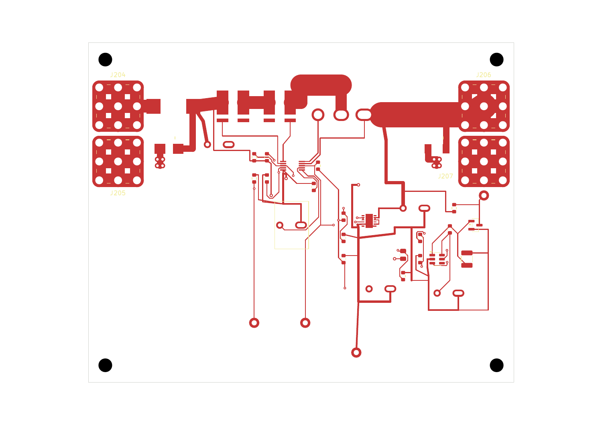

WP10 V32：修复主输入板 Kelvin 连接表达
整机仍未完成。此页仅确认本次实际ECAD修订及其验证，不赋予上电、制造或飞行信用。
4 → 0 项未连接原理图库、13页系统缓存、封装库与PCB同源；211位号 / 677针脚记录保持。ERC 0错误0警告，主输入板在原规则设置下DRC 0违规0未连接。
原生反例仍能检出撤销内部连接模型和删除真实取样线。没有桥接Kelvin沟槽，没有扩大排除规则。

铜、孔位和器件位置保持；五个板模型与两个库模型引用已修复并重载核对。